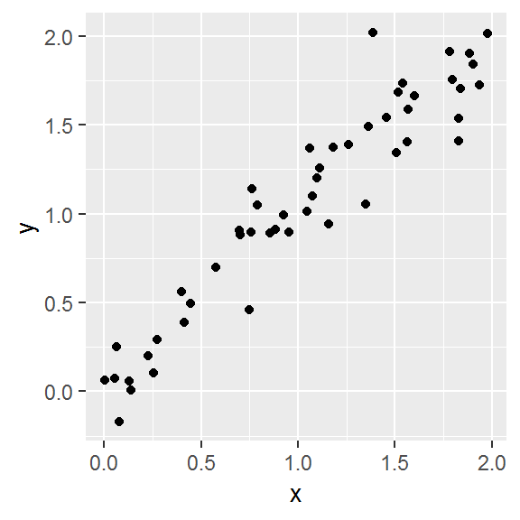

Earth Observation is an advanced course for students of the Master of Science “Global Change Geography” of Humboldt-Universität zu Berlin, other interested parties are cordially invited to join. In this course, we cover multiple aspects of optical remote sensing by working with multi-sprectral Landsat and Sentinel 2 imagery. The course is fully based on open source software, including R and QGIS.
As you followed the curriculum of the MSc program, you most likely joined the module “Quantitative Methods for Geographers”, in which you learned using R for statistical problems. Here, we built on your existing knowledge. If you are not enrolled in the MSc program, feel free to look at the course materials.
Alternatively, you may want to follow one of the numerous tutorials for R fundamentals (e.g., RStudio, DataCamp, UMC Utrecht, Advanced R by Hadley Wickham), or those specifically for geodata processing (e.g., Wageningen University, University of Colorado).
The main goal of this course is to provide you with the necessary knowledge and tools for using optical remote sensing datasets and methods in the geo-scientific context. We want you to enhance your ability of problem-solving, empowering you to perform research independently. To that end, we cover aspects of data acquisition, spatial data handling in R and QGIS, basics of image pre-processing, higher-level processing such as pixel-based compositing and time-series binning. The course contents are related to our lab´s research foci, both in terms of methods and study regions. You may want to check out our publications, current projects, or have a look at this example.
In the course you will learn about current state-of-the-art methods in image processing and time series analyses of optical satellite imagery. The course covers methods related to data quality, cloud masking, vegetation indices, multi-temporal image analyses, machine learning classification algorithms, area adjusted accuracy assessment, time series analyses, and image compositing. We use these methods for mapping of forest types, forest cover changes, agricultural dynamics in the Carpathian ecoregion (Poland), the Southern Brazilian Amazon, and Crete in Greece.
The first sessions of the course contain reading materials, such as are peer-reviewed papers and technical reports. You will find the reading materials for the next session at the end of each session. We highlight aspects to focus upon to streamline the reading process and facilitate the discussion. We are looking forward to lively discussions of the reading materials and critical questions from your end.
All data used in the course is openly accessible. Mostly, we´ll be working with Landsat images, which you can access through the USGS Earth Explorer. We provide download links to the datasets for each session. It will be helpful if you organize your data in a course directory on your local machine (MSc students might want to use drive O:/Student_Data/your_name/EO/). We will refer to this folder as course.dir throughout this course. Create subdirectories for each session, e.g. course.dir/S01/ and separate data, code and course materials in additional sub-directories (e.g. /data, /code, /docs).
The weekly exercises are defined in the respective session. Each session comprises several tasks that involve scipting in R. Course participants must submit completed exercises, documented as R scripts, in moodle to pass. Weekly submission deadlines are every sunday, 23:59. Please structure your script for every exercise as follows:
#############################################################################
# MSc Earth Observation Exercise [Session number]
# [Your Name]
#############################################################################
# Load packages, use install.packages('packagename') to install if needed
library(raster)
# Change raster options to store large rasters in temp files on disk
rasterOptions(maxmemory = 1e6)
# Define the folder that contains your data...
data.dir <- 'course.dir/S01/data/'
#############################################################################
# 1)
#############################################################################
# Comments for task 1
#############################################################################
# 2)
#############################################################################
# ...R is a programming language and open source software environment for statistical computing and graphics. The R language is widely used among statisticians and data miners for developing statistical software and data analysis. It was developed by Ross Ihaka and Robert Gentleman at the University of Auckland, New Zealand. The name R originates the first names of the two authors and refers to the programming language S. The project was conceived in 1992, with an initial version released in 1995 and a stable beta version in 2000.
Learning R has tons of advantages. It is a great starting point for those eager to learn programming. R offers increasingly specialized tools for data wrangling, statistical analyses, and visualization. The CRAN package repository currently features >13,000 packages serving a variety of purposes, e.g. data manipulation (tidyr, dplyr, caret), visualization (ggplot2, ggmap, rasterVis), and geodata handling (raster, rgdal, sp, sf). You will notice that a huge share of figures in scientific publications was produced using R. The R community is huge, and offers great support. R is extremely popular in science & industry, so a proficiency in R opens a wide array of job opportunities. Everything is free and open source.
A rising tide for R (Tipman 2015; doi: 10.1038/517109a)
A few basic rules apply to coding in R. Here is a short summary of Google´s style guide:
Script names should be meaningful and end in ‘.R’.
Try to limit your code to 80 characters per line.
Use underscores to separate words within a name.
Use <-, not =, for assignment.
An example:
######################################################
# Creating random data and a correlated response
# Philippe Rufin, 2019
# Load all required packages
library(ggplot2)
# Create random data
x <- runif(50, 0, 2)
# Build function to simulate response
create.response <- function(x){x + rnorm(50, 0, 0.2)}
# Apply function to random data
y <- create.response(x)
# Make a dataframe
data <- data.frame('x' = x, 'y' = y)
# Plot the simulated dataset
ggplot(data, aes(x = x, y = y)) +
geom_point()
# Investigate correlation in the data
cor(data$x, data$y)[1] 0.971865If you get stuck, there are plenty of things you can do:
In this session, you will
raster packageIt´s great, as it facilitates raster data handling. It allows us to access file characteristics before loading data into memory, facilitates handling of coordinate reference systems and spatial extents. We can use it to perform raster algebra, to combine raster and vector datasets (e.g. ESRI shapefiles), or to convert raster files into matrices, which are compatible with the base functions to access image statistics, develop models, slice data dimensions etc.
There are a couple of things that the raster package does not provide. Advanced visualization of spatial datasets and manual operations, such collecting training or validation data, are preferably done in a GIS environment (e.g. QGIS). Furthermore, processing large data volumes in R can be quite time-consuming (use Python instead, it´s syntax is similar to R).
# Install the raster and rgdal packages
install.packages('raster')
install.packages('rgdal')
# Load the package
library(raster)Let´s get some Landsat data. Visit the USGS Earth Explorer and use the Adress/Place field to navigate to Wisła, Poland (lat,lon: 49.6473,18.8677). Switch to the ‘Data Sets’ tab and select Landsat -> Landsat Collection 1 Level-1. Tick the ‘Landsat 8 OLI/TIRS C1 Level 1’ box and click on ‘Results >>’.
You´ll get several hundreds of results, so let´s narrow down the search. Switch to the ‘Additional Criteria’ tab. Let´s choose a scene cloud cover of ‘Less than 40%’, the ‘Tier 1’ category and narrow the date range to February 2014 until August 2014.
Find the following images:
Visualize the images in the Earth Explorer interface by clicking on the small image icon. For downloading the data, you will need an EarthExplorer account. If you prefer not to register, you can download the files from our repository. Otherwise you may register and download the .tar.gz files. Unpack them to your session folder.
# Define a path you want to store this session´s data in
path <- 'course.dir/S01/data/'
# Create data directory in your working directory
dir.create(path, showWarnings = TRUE, recursive = TRUE)
# Download the files for this session
if (!file.exists(paste0(path,'gcg_eo_s01.zip'))) {
download.file('https://box.hu-berlin.de/f/5248da1584054eb6ba51/?dl=1', dest = paste0(path,'gcg_eo_s01.zip'))
unzip(paste0(path,'gcg_eo_s01.zip'), exdir=path)
}Today, you will make use of R´s raster package classes and functions which are well described in the package documentation. Get acquainted with the following classes and functions and find out what they are useful for: raster(), stack() ,extent(), crop(), extract(), CRS(), projectRaster(), plotRGB(), writeRaster()
Visit the folder containing the unpacked Landsat image. Did you take a close look at the Landsat file naming convention? Practically, it provides some basic meta-information. For instance, LC08_L1TP_189025_20140310_20170425_01_T1 is a sequence of information on the sensor, processing level, WRS path and row, acquisition date, processing date, collection, and collection tier, separated by ’_’.
As you can see, the Landsat images are delivered as single-band files. The single bands should be stacked for further analyses. For stacking, all input files must have matching extents and the identical projection. Create a stack for each of the two Landsat 8 images.
Band designations for Landsat satellites
Important: Please include only the following bands: blue, green, red, near infrared, shortwave infrared 1, shortwave infrared 2 (in this order). Check the list of Landsat spectral bands for a recap. Always keep the band designations in mind, as this can cause confusion, e.g. when combining Landsat 5 and Landsat 8 data.
Try to create the two stacks with a minimum amount of code as possible! Consider using helper functions such as paste0(), dir() or list.files().
Investigate the stack. In which projection is the data delivered?
Compare the extent of the two images. You will notice that they vary. Trying to stack images of different extent will cause an error message claiming:
To stack both images, we need to crop (or clip, or cut) the images to their common extent. Find an efficient way to identify the common extent of the images, defined as common.extent <- c(xmin, xmax, ymin, ymax) (in projected coordinates).
Identifying the common extent of several images
roi.extent <- c(327945, 380325, 5472105, 5521095)writeRaster(). Use the GTiff format and the appropriate datatype. Why is this important?Open the cropped images (Xb) in QGIS. Seek the symbology to create a true-color (red, green, blue) and a false-color representation (e.g., RGB: swIR1, nIR, red) of each image. Be aware that the order of the spectral regions in the electromagnetic spectrum (BGR) is different in your computer screen´s (RGB).
Use the plotRGB() function in R to create another false-color visualization of the images.
False color visualization (RGB: nIR, red, green)
extract() function to get spectral profiles from both images. Use the following coordinate:coordinate <- data.frame('x' = 355623, 'y' = 5486216).
Spectral profiles for two observation dates
In the next session, we would like to discuss the following paper:
This is a rather technical reading, which introduces the Fmask algorithm for automated cloud and cloud shadow detection. It has been widely used for cloud detection on Landsat TM and ETM+ data, and was enhanced for the use with Landsat OLI and Sentinel 2 data (documented in Zhu et al. 2015).
While reading try to find answers to the following questions:
This is a non-exhaustive list of common terms and their definitions.
Observation
Scene, Image
Collection, Tier, Processing level
Image quality
Coarse Resolution
Hyper-temporal